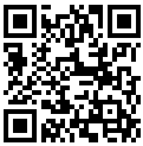

Letakkan perangkat rata di permukaan
Sebagian besar komputer tidak memiliki sensor yang diperlukan. Pindai kode QR untuk melanjutkan di perangkat seluler Anda.

Cara Menggunakan Inclinometer Online Ini untuk Mengukur Sudut
Inclinometer online ini adalah aplikasi berbasis web yang dirancang untuk mengukur sudut permukaan (kemiringan, pitch, dan roll) dengan presisi tinggi, menggunakan sensor yang sudah terpasang di ponsel cerdas atau tablet Anda. Ini mengubah perangkat Anda menjadi level spirit digital yang kuat, level gelembung, atau klinometer secara gratis, tanpa memerlukan instalasi perangkat lunak apa pun. Semuanya berjalan langsung di browser web Anda, membuatnya mudah untuk mengukur sudut dan kemiringan di mana saja. Gunakan sebagai alat yang andal untuk mengukur sudut, mengukur kemiringan, atau memeriksa pitch dan roll.
Fungsionalitas Inti
- Pengukuran Sudut Waktu Nyata: Setelah Anda memberikan akses sensor dan menekan Mulai, aplikasi membaca data dari akselerometer dan giroskop perangkat Anda untuk menghitung pitch (sumbu X) dan roll (sumbu Y) secara waktu nyata. Ini memberikan pengukuran sudut dan kemiringan instan.
- Level Gelembung Presisi Tinggi: Antarmuka grafis pusat menampilkan gelembung virtual yang bergerak berdasarkan kemiringan perangkat, memberikan panduan visual yang intuitif untuk mencapai level yang sempurna. Ini adalah inclinometer gratis di browser Anda.
- Kalibrasi Nol: Tombol Nol memungkinkan Anda mengatur permukaan apa pun sebagai titik referensi (0 derajat). Ini berguna untuk mengukur sudut satu permukaan relatif terhadap yang lain, bukan terhadap level absolut. Fitur yang sempurna untuk alat sudut apa pun di browser. Saya juga dapat menggunakannya untuk menyesuaikan tonjolan di perangkat seluler Anda seperti kamera yang menonjol.
- Perataan Tanpa Tampilan: Aktifkan umpan balik audio di pengaturan, dan perangkat Anda akan berbunyi bip saat level yang sempurna tercapai, memungkinkan Anda untuk meratakan permukaan tanpa terus-menerus memantau layar.
Penafian: Memahami Akurasi
Perlu diketahui bahwa meskipun alat ini menawarkan cara yang nyaman untuk mengukur kemiringan, sensor di ponsel cerdas biasa tidak dirancang untuk pengukuran sudut tingkat metrologi. Faktor-faktor seperti kualitas sensor, kalibrasi perangkat, dan bahkan benjolan kecil pada casing ponsel Anda dapat menimbulkan kesalahan. Untuk banyak tugas DIY dan penggemar, akurasinya lebih dari cukup. Namun, untuk aplikasi profesional yang memerlukan presisi bersertifikat, disarankan menggunakan level spirit khusus yang dikalibrasi. Alat ini memberikan ukuran sudut yang andal untuk sebagian besar kebutuhan sehari-hari.
Cara Meningkatkan Akurasi Pengukuran
Anda dapat secara signifikan meningkatkan akurasi pengukuran kemiringan Anda dan mengkompensasi bias sensor dengan menggunakan metode kalibrasi dua langkah sederhana. Proses ini secara efektif membatalkan sebagian besar kesalahan zero-offset yang melekat pada ponsel saat Anda perlu mengukur sudut dengan presisi yang lebih baik.
- Pengukuran Pertama: Letakkan ponsel Anda di permukaan yang ingin Anda ukur dan catat pembacaan sudut (mis. 8°).
- Pengukuran Kedua: Tanpa mengangkatnya, putar ponsel Anda tepat 180° di tempat yang sama (sehingga "berhadapan" dengan posisi aslinya) dan ambil pembacaan kedua (mis. 10°).
- Hitung Sudut Sebenarnya: Sudut sebenarnya adalah rata-rata dari kedua pengukuran ini. Contoh: (8 + 10) / 2 = 9°. Ini adalah kemiringan Anda yang lebih akurat di browser.
Gunakan metode rotasi 180° untuk menghilangkan kesalahan sensor dan mencapai pengukuran sudut yang lebih akurat.
Cara Melakukan Kalibrasi "Nol"
Kalibrasi nol memungkinkan Anda untuk mengatur permukaan Anda saat ini sebagai titik referensi baru (0 derajat), yang penting untuk mengukur sudut relatif atau mengkompensasi permukaan yang tidak rata. Begini cara melakukannya:
- Tempatkan Perangkat: Letakkan ponsel cerdas atau tablet Anda dengan kuat di permukaan yang ingin Anda tetapkan sebagai referensi 0°.
- Stabilkan: Pastikan perangkat Anda stabil dan tidak bergerak.
- Tekan Nol untuk mengkalibrasi: Ketuk tombol Nol pada antarmuka inclinometer.
- Garis Dasar Baru: Pembacaan pitch dan roll saat ini akan langsung diatur ulang ke 0°, menetapkan orientasi ini sebagai garis dasar baru Anda untuk semua pengukuran selanjutnya.
Kalibrasi nol menetapkan permukaan saat ini sebagai referensi 0°, memungkinkan pengukuran sudut relatif.
Menyesuaikan untuk Kamera yang Menonjol
Ponsel cerdas modern sering kali memiliki tonjolan kamera yang mencegahnya diletakkan rata sempurna. Ini dapat mengganggu pengukuran yang akurat, tetapi Anda dapat dengan mudah memperbaikinya menggunakan tombol Nol, seperti yang diilustrasikan di bawah ini.
- Tempatkan dan Amati: Posisikan ponsel Anda di permukaan. Perhatikan bahwa tonjolan kamera menciptakan kemiringan yang sedikit dan stabil, menunjukkan pembacaan bukan nol.
- Tekan Nol: Ketuk tombol Nol. Ini menginstruksikan inclinometer untuk memperlakukan posisi miring ponsel saat ini sebagai titik referensi "0°" yang baru.
- Ukur Secara Akurat: Tampilan sekarang akan membaca 0°. Efek tonjolan kamera dibatalkan, memungkinkan Anda untuk melakukan pengukuran yang akurat relatif terhadap permukaan.
Gunakan "Nol" untuk mengkompensasi kemiringan yang disebabkan oleh tonjolan kamera.
Kasus Penggunaan Rinci untuk Inclinometer Kami
Inclinometer berbasis browser ini adalah alat serbaguna untuk mengukur pitch dan roll untuk banyak tugas:
- Konstruksi & Pertukangan: Gunakan klinometer ini untuk memastikan dinding benar-benar vertikal dan lantai rata. Saat membingkai atap, ukur pitch untuk memastikan kasau dipotong dan dipasang pada sudut yang benar. Ini juga bagus untuk mengatur kemiringan yang tepat untuk drainase di teras atau jalan setapak.
- Instalasi Panel Surya: Untuk memaksimalkan pembangkitan energi, panel surya harus diatur pada sudut kemiringan optimal berdasarkan lintang dan musim. Gunakan alat ini untuk mengukur pitch secara tepat selama pemasangan, memastikan panel Anda memiliki orientasi yang benar terhadap matahari untuk efisiensi puncak.
- DIY & Perbaikan Rumah: Gantung bingkai foto dengan lurus sempurna setiap saat. Saat merakit furnitur atau memasang lemari dapur, gunakan inclinometer untuk memastikan semuanya rata. Ini juga merupakan alat yang sempurna untuk mengukur kemiringan saat memasang peralatan seperti mesin cuci untuk mencegah ketidakseimbangan dan getaran.
- Fotografi & Videografi: Hindari cakrawala miring dengan menggunakan alat ini untuk meratakan kamera Anda pada tripod. Ini sangat penting untuk fotografi lanskap, arsitektur, dan panorama di mana garis lurus sangat penting untuk hasil profesional.
- Perataan Kendaraan & RV: Periksa sudut driveline setelah memodifikasi suspensi kendaraan. Saat berkemah, gunakan untuk meratakan karavan atau RV Anda untuk kenyamanan dan untuk memastikan peralatan (seperti lemari es) berfungsi dengan benar. Ini adalah alat pengukur kemiringan yang berguna untuk pengaturan kendaraan apa pun.
- Pemipaan dan Drainase: Saat memasang pipa drainase, kemiringan yang konsisten dan landai sangat penting untuk aliran yang baik. Gunakan inclinometer online ini untuk mengukur sudut secara tepat dan mencegah masalah penyumbatan atau genangan air di masa mendatang.
Pertanyaan yang Sering Diajukan
Berikan akses sensor, tekan Mulai Mengukur, dan letakkan perangkat Anda di permukaan. Inclinometer akan menampilkan sudut pitch (sumbu X) dan roll (sumbu Y) secara real-time. Gunakan tombol Nol untuk mengatur titik referensi.
Akurasi tergantung pada kualitas akselerometer perangkat Anda. Untuk tugas DIY dan hobi, ini sangat akurat. Untuk presisi tingkat metrologi profesional, disarankan menggunakan level spirit yang dikalibrasi khusus. Gunakan metode kalibrasi rotasi 180° untuk akurasi yang lebih baik.
Ya, semua data sensor diproses langsung di perangkat Anda di browser Anda. Tidak ada informasi yang dikirim ke server kami. Pengukuran Anda sepenuhnya pribadi.
Anda dapat menggunakannya untuk pemasangan panel surya, konstruksi, pertukangan, proyek DIY, fotografi, perataan kendaraan, pemipaan, dan tugas apa pun yang memerlukan pengukuran sudut atau kemiringan.
Letakkan ponsel Anda di permukaan dengan tonjolan kamera, catat pembacaan, lalu tekan tombol Nol. Ini mengkalibrasi efek tonjolan kamera, memungkinkan pengukuran yang akurat.
100% Pribadi dan Aman
Kami berkomitmen untuk privasi Anda. Semua data sensor diproses langsung di perangkat Anda oleh browser. Tidak ada informasi yang pernah dikirim ke server kami. Pengukuran Anda adalah milik Anda sendiri.